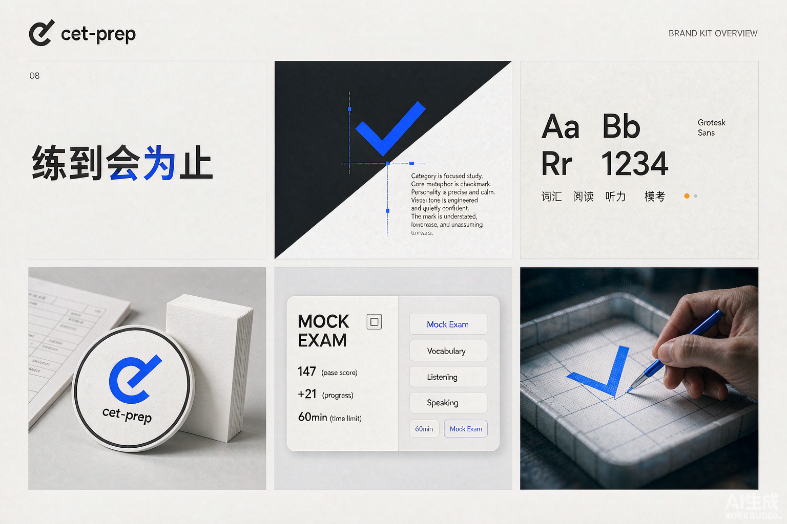

一套不推翻现有习惯的质感升级：保留 84px 窄轨导航、等宽数据与电光蓝，把「能用」升级为「有物理感、有仪式感、顺手」。

升级的对象是「质感」与「动效」，不是用户已经记住的布局。肌肉记忆是最贵的 UI 资产。
84px 侧轨、页面结构、卡片密度、等宽数据全部保留。只升级表面材质与交互反馈。
电光蓝 #0000FF 仍是唯一强调色。对 = 蓝，错 = 红，中性 = 灰。克制即高级。
所有过渡用同一条弹簧曲线，元素像有重量的实体而非透明度开关。宁少勿多。
核心手法是双层边框（Double-Bezel）：卡片外层是浅灰托盘，内层是白色面板，同心圆角。屏幕上的元素开始像被加工出来的硬件。
0 1px 2px rgb(0 0 0/.04), 0 8px 24px rgb(0 0 0/.06)
大扩散、低透明度、无硬边。hover 时浮起 2px 并加深，像被托起来。
| --ease | cubic-bezier(.32,.72,0,1) | 全局唯一缓动，禁止 linear / ease-in-out |
| --t-fast | 150ms | hover、按下、选项选中 |
| --t-med | 350ms | 卡片浮起、Tab 指示器滑动 |
| --t-slow | 700ms | 页面入场、成绩数字滚动 |
| --r-card | 外 24 / 内 19 | 同心圆角，差值 ≈ 托盘内边距 |
| --r-pill | 999px | 按钮、筛选 chip、开关 |
| 层级 | z: 10 导航 · 40 弹层 · 50 提示 | 禁用 z-9999，层级只有三档 |
下面都是活的——点一点，感受一下物理反馈。这些对应现有 .btn / .tag / .quiz-option / .data-table 的直接升级。
主按钮 = 深色药丸 + 右侧内嵌圆形图标位；hover 时图标「斜向探头」，按下整钮缩至 97%，像真的按下去。
选中瞬间蓝底淹没整行（.quiz-option），判对时轻微脉冲一次。答案永远用「选项原文」定位的既有逻辑不受影响。
↑ 点击选择（选 C 看判对脉冲）
板块 chip / 筛选 tab 的选中态不再变色，而是一片白磁铁在轨道下滑动——移动的是背景，不是文字。
等宽字体与右对齐数字保留（现有 .data-table 规范），行 hover 加一层 3% 蓝染。
本页本身就按这套规范编排：滚动到哪，哪里的元素错峰浮起。应用里对应三个关键时刻——
页面内容按 90ms 步进依次上浮入场（本页正在演示）。只动 transform + opacity，滚动监听用 IntersectionObserver，不掉帧。
进度条从 0 生长到目标值，入场后延迟 200ms 启动。柱状图同逻辑（固定轨道 + 目标高度，不用 height% 动画）。
交卷后总分从 0 滚到实际分（1.4s），过 425 分时数字短暂变绿。滚动用 rAF 缓动，而非定时器。
主题切换的「圆形漾开」（新皮肤从点击处扩散，0.6s）实测零掉帧，是全应用最好的动效——原样保留，只把曲线统一到 --ease。prefers-reduced-motion 用户直接跳到终态。
不新增文件、不引入 UI 库，改动集中在 styles.css 的令牌层与第 23/29 节动效区。遵循主题铁律：覆盖块只改几何，绝不在基础类上写背景色。
新增 --shadow-1/2、--ease、--t-*、双层卡片 .shell/.core 工具类；圆角体系升级（卡片 16→24/19）。spacex 暗色主题的对应覆盖同步。
按钮岛式化（主按钮加内嵌圆图标位）；quiz-option 选中蓝染 + 判对脉冲；Tab 选中态改滑动指示器；表格行 hover 蓝染。侧边栏导航同步滑动指示器。
页面入场错峰浮起（IntersectionObserver 一次性挂载）；进度条/柱图生长；成绩数字滚动；全站曲线统一 --ease。reduced-motion 降级为一瞬直达。
蓝底白字对比度 8.6:1（WCAG AAA）；所有可交互元素 :focus-visible 蓝色描边；触达目标 ≥ 40px；prefers-reduced-motion 全动效降级。
只动 transform 与 opacity，永不动画 top/left/height；backdrop-blur 只许用在固定悬浮层；滚动监听一律 IntersectionObserver；入场动画一次性触发后即卸载。